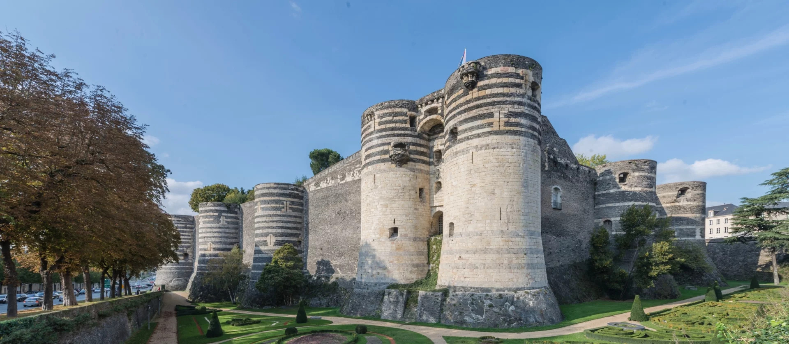

Chaque troisième week-end de septembre, les Journées Européennes du Patrimoine offrent une occasion privilégiée de redécouvrir les trésors architecturaux et historiques d'Angers. Des forteresses médiévales aux hôtels particuliers d'ordinaire fermés au public, la cité angevine met à l'honneur son patrimoine pluriséculaire à travers des parcours libres, des visites commentées et des ateliers inédits entièrement gratuits.
Édifiée au XIIIe siècle par saint Louis, l'imposante forteresse aux 17 tours de schiste et de calcaire domine la Maine. Site emblématique du Val de Loire, le château propose un voyage à l'époque des ducs d'Anjou.
Chef-d'œuvre du tissage médiéval commandé par Louis Ier d'Anjou au XIVe siècle, cette tapisserie monumentale de plus de 100 mètres de long se dévoile dans une scénographie pensée pour sa préservation.
Le chemin de ronde offre un panorama dégagé sur les toits d'Angers, tandis que les fossés et cours intérieures accueillent des jardins d'inspiration médiévale, riches en plantes médicinales et vignes.
Situé sur la rive droite de la Maine, le quartier historique de la Doutre regorge de ruelles pavées et de vestiges remarquablement conservés, témoins de l'Angers d'antan.
Remarquable ensemble d'architecture hospitalière du XIIe siècle, la grande salle des malades abrite Le Chant du Monde, ensemble monumental de tapisseries contemporaines tissées en hommage à la Tenture de l'Apocalypse.
Ancienne abbaye bénédictine féminine romane, elle ouvre ses portes pour des déambulations sonores et des présentations consacrées aux techniques de réhabilitation de la pierre d'Anjou.
Dominant la ville par sa façade flanquée de flèches jumelles, la cathédrale Saint-Maurice illustre les débuts du gothique angevin (ou style Plantagenêt) avec ses voûtes bombées caractéristiques.
À l'occasion du week-end du patrimoine, des guides-conférenciers animent des visites thématiques pour décrypter les vitraux du XIIe et XIIIe siècles et les découvertes archéologiques récentes du chevet.
Sur inscription préalable, quelques privilégiés peuvent gravir les marches menant au triforium pour observer de près les sculptures de pierre et la charpente de l'édifice.
| Monument | Horaires d'ouverture | Modalités d'accès |
|---|---|---|
| Château d'Angers | 10 h 00 – 18 h 30 (Samedi & Dimanche) | Entrée libre, file prioritaire pour la Tenture. |
| Musée Jean-Lurçat (Hôpital Saint-Jean) | 10 h 00 – 18 h 00 (Samedi & Dimanche) | Visite libre, médiateurs présents sur place. |
| Cathédrale Saint-Maurice | 14 h 00 – 18 h 00 (Hors offices) | Accès libre, montée aux tours sur créneau réservé. |
| Accès gratuit à tous les sites municipaux et nationaux du réseau angevin | ||